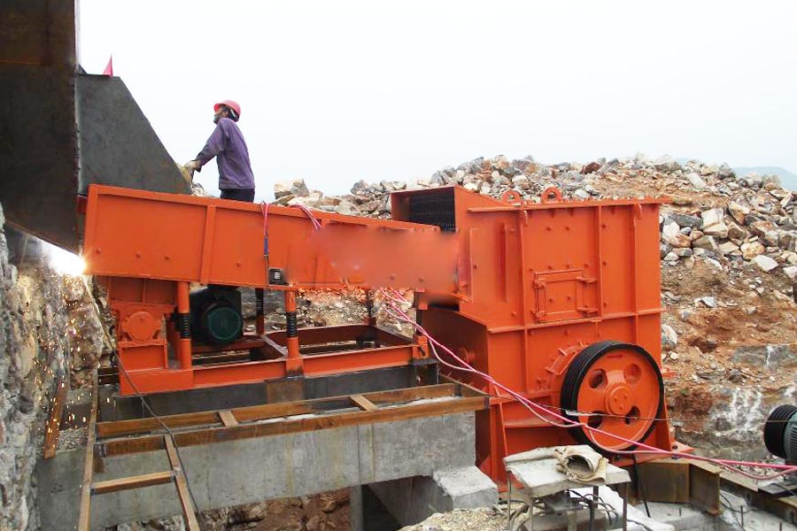

Construction waste crushing production line

Mobile construction waste crushing station for urban construction waste crushing.
Black Limestone Crusher machine
Black Limestone Crusher machine. Limestone crusher, limestone sand, limestone production line, CAG, as the most valuable crushing, grinding equipment total solution provider, dedicated 30 years of non-metallic mineral processing, has many years of experience in limestone processing.
500/600 tons per hour of limestone production line, production line limestone, limestone crushing equipment manufacturers price, stone blasting down from the mountains, fed by feeder dump truck will be less than 930mm of stone, vibrating feeder evenly into the stone jaw crusher.

Limestone crushing plant
CAG Machinery (Limestone crushing plant) in mineral processing aspects widely used, many customers get more benefits, CAG product also mainly for minerals, rock crusher, mineral grinding, sand stone and mineral processing and other fields. We provide Limestone crushing plant technical guidance, based on your specific needs, for your rational design of production lines.
Because the tariff is low, you can (Limestone crushing plant) to save a lot of costs, it can also be purchased to get more benefits, our products and designs for you is really value for money.
Limestone is a sedimentary rock composed largely of the minerals calcite and aragonite, which are different crystal forms of calcium carbonate (CaCO3). Many limestones are composed from skeletal fragments of marine organisms such as coral or foraminifera.
Limestone makes up about 10% of the total volume of all sedimentary rocks. The solubility of limestone in water and weak acid solutions leads to karst landscapes, in which water erodes the limestone over thousands to millions of years. Most cave systems are through limestone bedrock.
Limestone has numerous uses, including as a building material, as aggregate to form the base of roads, as white pigment or filler in products such as toothpaste or paints, and as a chemical feedstock.
Limestone crusher models mainly hammer crusher, limestone is currently the most widely used is the relatively low price of an industrial raw material, especially in the construction industry, limestone plays an important role. It is the main raw material for a variety of building materials.
In the limestone assembly process, we will mainly acquaint to you limestone crushing action and limestone grinding system.
Limestone crushing action is the aboriginal important action afore limestone abstracts are broiled and beatific into the next system. The arrangement of admeasurement of the better block to be augment and the final products’ atom admeasurement is alleged abridgement arrangement of the crushing system. It anon affects the identification of the amount of torn sections and the alternative of crusher.
In the limestone crushing plant, there are Jaw crusher and impact crusher for big abridgement ratio. Usually these limestone crushers’ abridgement arrangement is 10~35. Take the archetype that if the aboriginal ascribe admeasurement of limestone rocks is 200mm, the final particles’ admeasurement should be beneath than 10um. Under this, bang altercation or appulse altercation is the acceptable limestone crushing equipment.
Limestone grinding equipment, limestone production line, the plant limestone desulfurization equipment, factory supply Tanzania limestone crusher | Mining dedicated crusher equipment, CAG production of limestone production line equipment, to provide you with comprehensive technical support.
Tanzania limestone crushing plant manufacturer. Production of 350 tons per hour of limestone sand production equipment, limestone crushing equipment, limestone sand making equipment, artificial sand aggregate production process, production process and equipment is essential, it affects the rhythm of the entire production process.
Leave Me A Message, Now
If you have any questions regarding equipment prices, production line configuration or other problems, you can send a message to us, we will contact you soon.